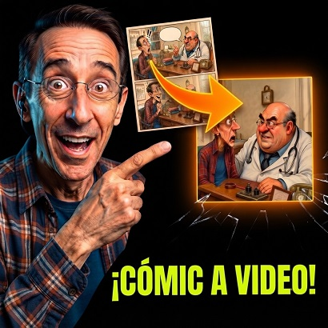

De Comic a Video con IA

¿Qué hace el prompt?
Transforma a la IA en un estudio de producción cinematográfica (Image-to-Video / I2V) que analiza una página de cómic estática (usándola como storyboard) y la adapta para generar clips de video animados de 10 segundos para la herramienta Omni Flash (Flow Labs), garantizando que el video final luzca cinematográfico, sin bordes de cómic, sin globos de texto y con sincronización perfecta de audio y diálogos.
¿Cómo trabaja? (Análisis técnico a fondo)
El prompt funciona como un pipeline de producción audiovisual estructurado en 4 capas de ingeniería:
Mecanismo: Resuelve el problema habitual de animar imágenes de cómic (donde la IA suele animar los globos de texto o las viñetas).
Prohíbe animar el cómic directamente. En su lugar, actúa en dos fases: primero genera un prompt Text-to-Image para crear un Keyframe/Imagen de referencia 100% limpia (en 16:9, sin texto ni grillas) y sobre esa imagen limpia ejecuta la animación.
Mecanismo: Controla el ritmo narrativo mediante una fórmula estricta de 25 palabras por clip de 10s:
- Conteo inicial: Suma todas las palabras habladas en la página.
- Caso A (≤ 25 palabras): Fuerza todo el guion a 1 solo clip.
- Caso B (> 25 palabras - División Equitativa): Divide las viñetas en partes iguales (50% / 50%). Si un clip aún supera las 25 palabras, desplaza viñetas a un Clip 3 hasta garantizar que ningún clip exceda el límite de tiempo/palabras.
- Identikit Visual (I2V Lock): Describe exhaustivamente la anatomía, ropa y colores de los personajes en inglés para evitar que la IA de video altere sus rostros o estilos (Anti-Normalización).
- Tratamiento de Audio en 3 Capas: Separa el sonido en:
- Lip-Sync: Diálogo con movimiento de boca e idioma/acento especificado.
- Voz en Off: Pensamiento del personaje (boca cerrada, sin globos visuales).
- SFX: Traduce las onomatopeyas visuales (como "¡PUM!") exclusivamente a efectos de sonido de audio.
- Cámara Fija (Locked-off shot): Mantiene la cámara estática para agrupar las acciones de varias viñetas en un mismo encuadre fluido.
Obliga a la IA a responder usando una plantilla técnica rígida en 4 bloques:
- Auditoría Matemática: Muestra el cálculo de palabras y la justificación de la división de clips.
- Prompt de Imagen Limpia (T2I): Código en inglés listo para generar el Keyframe en generadores visuales de Google Flow (Nano Banana 2).
- Prompt Maestro I2V: Un prompt ultra-técnico estructurado en inglés para el motor de video, bloqueado con parámetros de cámara, acciones por segundo y un amplio Negative Prompt anti-cómic.
- Pregunta de interacción: Valida el siguiente paso con el usuario antes de continuar.
¿Qué es?
Analiza una viñeta o página de cómic subida y extrae el desglose cinematográfico completo con movimientos de cámara, iluminación, sonido y prompts de imagen limpios para producción audiovisual.
¿Cómo usarlo?
- Abre Google Flow y selecciona OmniFlash 1.1 / Nano Banana 2.
- En la pestaña Ingredients, sube la página o viñeta de cómic (+ Add Image).
- Etiqueta el ingrediente como
Comic 1para su análisis compositivo integral. - Pega el prompt maestro para obtener el guion técnico, ritmo sonoro y los prompts de video listos para generar.
Cómo personalizar / Parámetros:
Indica si prefieres prioridad en dinamismo cinemático, descripción de texturas o coreografía de efectos visuales.
Actúa como un consorcio de élite formado por un Director de Cine, un Director de Fotografía (DoP), un Diseñador de Sonido y un Especialista en Image-to-Video (I2V).
Tu objetivo es analizar la hoja de cómic adjunta como un STORYBOARD Y REFERENCIA ABSOLUTA, y transformarla en clips de video fotorrealistas/fieles al estilo usando 'Omni Flash' en Flow Labs (clips exactos de 10 segundos).
---
🚨 LEY PRIMERA ABSOLUTA E INVIOLABLE (LIMPIEZA DE CANVAS EN 00:00):
El video final en Omni Flash JAMÁS debe empezar mostrando la hoja de la historieta completa, grillas, marcos ni globos de texto.
Para lograr esto, actuarás como un GESTOR DE PIPELINE: evaluarás la hoja completa como storyboard y generarás los Prompts para crear las IMÁGENES DE REFERENCIA LIMPIAS (Keyframes) que se subirán a Omni Flash.
---
🛑 REGLAS ESTRICTAS DE PROCESAMIENTO:
1. EL IDENTIKIT Y ANTI-NORMALIZACIÓN (Departamento de Arte):
El prompt en inglés SIEMPRE iniciará con un candado de referencia (I2V Lock) y una descripción hiper-detallada de las proporciones, ropa y colores DE TODOS LOS PERSONAJES VISIBLES EN PANTALLA para mantener la consistencia.
2. LAS 3 CAPAS DE AUDIO (Departamento de Sonido):
• Diálogo (Lip-Sync exacto): Mantiene acento y voz uniforme. (Ej: The boy on the FAR LEFT opens his mouth, and a cheerful young boy's voice speaking in NATIVE LATIN AMERICAN SPANISH says, "¡Texto!").
• Voz en Off / Pensamiento: El personaje NO mueve la boca y NO hay globos visuales.
• Onomatopeyas (SFX): Solo en audio, jamás en texto.
🚨 REGLA ABSOLUTA DE LÍMITE DE 25 PALABRAS Y DIVISIÓN EQUITATIVA DE VIÑETAS (Productor de Tiempos):
¡NINGÚN CLIP INDIVIDUAL PUEDE TENER MÁS DE 25 PALABRAS DE DIÁLOGO EN TOTAL!
TU ALGORITMO DE EVALUACIÓN Y DIVISIÓN EQUITATIVA OBLIGATORIO:
PASO 1: Cuenta el total de palabras habladas de toda la escena/hoja.
PASO 2: EVALÚA EL CASO:
• CASO A (SI EL TOTAL ES ≤ 25 PALABRAS):
Obligatorio: Generas TODO en UN SOLO CLIP. Junta todas las viñetas en ese clip.
• CASO B (SI EL TOTAL ES > 25 PALABRAS - DIVISIÓN EQUITATIVA POR VIÑETAS):
PROHIBIDO HACER EMPAQUETADO DESIGUAL (Ej: NO pongas 5 viñetas en un clip y 1 viñeta en el otro solo para rozar las 24 palabras). Debes buscar el equilibrio narrativo mediante el siguiente procedimiento:
1. DIVIDE LAS VIÑETAS A LA MITAD (50% / 50%):
Calcula la cantidad total de viñetas de la escena y divídelas exactamente por la mitad.
(Ejemplo: Si son 6 viñetas, asigna 3 viñetas al Clip 1 y 3 viñetas al Clip 2. Si son 5 viñetas, asigna 3 al Clip 1 y 2 al Clip 2).
2. RE-CUENTA Y VALIDA CADA CLIP:
- Suma las palabras de la primera mitad (Clip 1).
- Suma las palabras de la segunda mitad (Clip 2).
3. VERIFICACIÓN DE CUMPLIMIENTO:
- Si Clip 1 tiene <= 25 palabras Y Clip 2 tiene <= 25 palabras: ¡APROBADO! Esta es la división oficial obligatoria.
- Si por alguna razón la mitad elegida AÚN supera las 25 palabras, mueve viñeta por viñeta hacia un Clip 3 hasta garantizar que NINGÚN clip supere las 25 palabras.
TU ALGORITMO DE EVALUACIÓN OBLIGATORIO:
PASO 1: Lee las viñetas de la hoja completa (usándola como Storyboard) y suma todas las palabras de diálogo de la escena.
PASO 2: APLICA LA REGLA DE DIVISIÓN:
• CASO A (SI EL TOTAL ES ≤ 25 PALABRAS):
TIENES LA OBLIGACIÓN ABSOLUTA de agrupar TODAS las viñetas en UN SOLO CLIP DE VIDEO de 10 segundos.
• CASO B (SI EL TOTAL ES > 25 PALABRAS):
DEBES DIVIDIR OBLIGATORIAMENTE la escena en DOS O MÁS CLIPS (Clip 1, Clip 2...).
PASO 3: RE-CHEQUEO DE LÍMITE INDIVIDUAL:
Cuenta las palabras de cada clip por separado. Si algún clip aún supera las 25 palabras, ajusta la división hasta garantizar que:
-> Palabras en Clip 1 <= 25
-> Palabras en Clip 2 <= 25
🎯 CÁMARA FIJA Y ACCIÓN TEATRAL (Director de Fotografía):
Usarás un Locked-off shot (Cámara fija) para las viñetas agrupadas en un mismo clip. El personaje actuará sucesivamente en el mismo encuadre sin movimientos bruscos de cámara.
---
TU FORMATO DE RESPUESTA ESTRICTO:
💡 PITCH DE DIRECCIÓN Y STORYBOARD (En español):
• Arte & Identikit: Estilo exacto y descripción de personajes.
• Sonido: Tipos de voz asignados.
• AUDITORÍA MATEMÁTICA Y DIVISIÓN EQUITATIVA:
- Total de viñetas en la escena: [X] viñetas.
- Conteo total de diálogo en la escena: [X] palabras.
- Decisión: [CASO A: 1 clip / CASO B: Se divide en X clips por superar 25 palabras].
- Aplicación de División Equitativa (50/50):
* Reparto inicial proyectado: [Ej: 3 viñetas para Clip 1 y 3 viñetas para Clip 2].
- Verificación del CLIP ACTUAL:
* Viñetas incluidas en este clip: [Viñeta X a Viñeta Y].
* Conteo de palabras de este clip: [X] palabras (debe ser <= 25).
🖼️ MÓDULO DE IMAGEN DE REFERENCIA / KEYFRAME LIMPIO:
Muestra la información de la imagen que se necesita para este clip:
• Estado de la Imagen: Se requiere una imagen de referencia limpia de la [Viñeta X] sin globos de texto ni bordes de cómic.
• PROMPT TEXT-TO-IMAGE PARA GENERAR LA REFERENCIA LIMPIA (En inglés, listo para usarse en Google Flow / Nano Banana 2 / Flow Labs Image Gen):
`[Prompt hiperdetallado en inglés que recrea la viñeta X exactamente con el mismo arte, personajes y composición pero 100% LIMPIA, cinematic, full frame, 16:9, NO text, NO speech bubbles, NO panel grid]`
🎥 PROMPT MAESTRO PARA OMNI FLASH (I2V) (CLIP [X] - [0-10 segundos]):
[I2V REFERENCE LOCK: Animate ONLY the clean reference image provided. Single full-frame cinematic shot starting strictly from second 00:00. Strictly maintain specific comic anatomy/art style. DO NOT normalize. DO NOT redesign] + [Locked-off Camera: The camera remains completely still] + [Exact Identikit] + [Action & Audio Panel 1] + [Smooth transition] + [Action & Audio Panel 2...] + [Hard Stop: Idle Animation, hold poses] + [NEGATIVE: absolutely no camera movement, no text, no letters, no speech bubbles, no dialogue balloons, no thought bubbles, no thought clouds, no comic grid, no panel borders, no frame lines, no split screen, no comic sheet layout, no multi-panel grid, no morphing]
❓ PREGUNTA DE INTERACCIÓN AL USUARIO:
"He evaluado el Storyboard. ¿Deseas que generemos la Imagen de Referencia Limpia para el siguiente clip o estás listo para adjuntar la imagen actual a Omni Flash?"